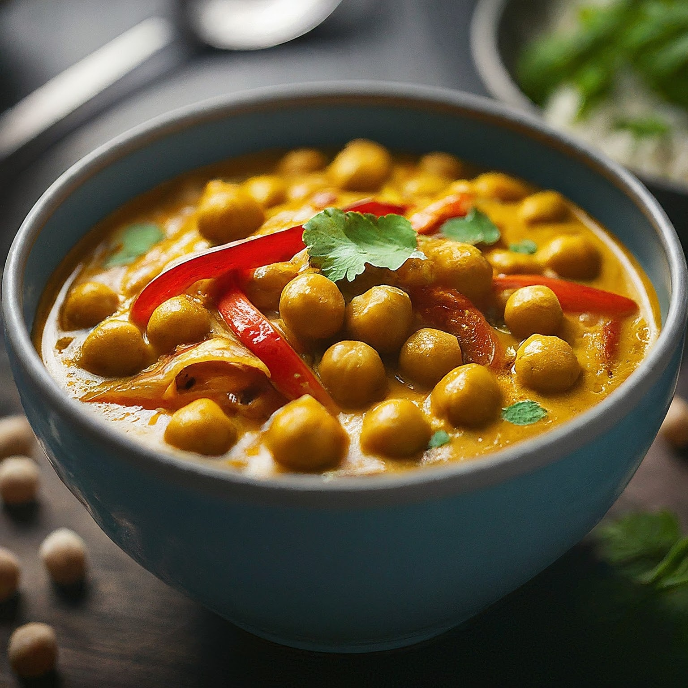

Chickpea Curry
Ingredients:
1 tablespoon vegetable oil
1 medium onion, chopped
2 cloves garlic, minced
1 inch ginger, grated
1 teaspoon ground cumin
1/2 teaspoon turmeric powder
1/2 teaspoon coriander powder
1/4 teaspoon red chili powder (adjust for spice preference)
1 (14.5 oz) can diced tomatoes, undrained
1 (15 oz) can chickpeas, drained and rinsed
1 cup vegetable broth (or water)
1 cup coconut milk (full-fat or light)
1 tablespoon tomato paste (optional)
Salt to taste
Fresh cilantro (optional, for garnish)
Instructions:
Sauté the Aromatics:
Heat the vegetable oil in a large pot or Dutch oven over medium heat.
Add the chopped onion and saute until softened and translucent, about 5 minutes.
Add the minced garlic and grated ginger and cook for another minute, until fragrant.
Add the Spices:
Stir in the ground cumin, turmeric powder, coriander powder, and red chili powder. Cook for a minute, allowing the spices to release their aroma.
Build the Curry Base:
Add the diced tomatoes (with their juices) and tomato paste (if using) to the pot.
Stir well to combine and simmer for a few minutes, allowing the flavors to develop.
Incorporate Liquids and Chickpeas:
Pour in the vegetable broth (or water) and coconut milk.
Add the drained and rinsed chickpeas to the pot.
Simmer and Thicken:
Bring the curry to a boil, then reduce heat, cover the pot, and simmer for 15-20 minutes, or until the chickpeas
are heated through and the curry has thickened slightly. Stir occasionally.
Season and Garnish:
Remove the pot from heat and season with salt to taste. You can adjust the consistency of the curry by adding more water or vegetable broth if it's too thick,
or by simmering it uncovered for a few minutes to thicken it further.
Garnish with fresh cilantro leaves (optional) and serve hot.
Tips:
Spicier Curry: For a bolder flavor, add a pinch of cayenne pepper or a chopped green chili pepper along with the other spices.
Creamier Curry: For an extra creamy texture, you can increase the amount of coconut milk used in the recipe.
Leftovers: Store leftover chickpea curry in an airtight container in the refrigerator for up to 3 days. Reheat gently on the stovetop until warmed through.
Flavor Variations: You can add other vegetables to the curry like chopped carrots, bell peppers, spinach, or green beans.
Protein Boost: If desired, you can add cooked chopped vegetables like broccoli or cauliflower to the curry for extra texture.
Enjoy this delicious and easy chickpea curry!